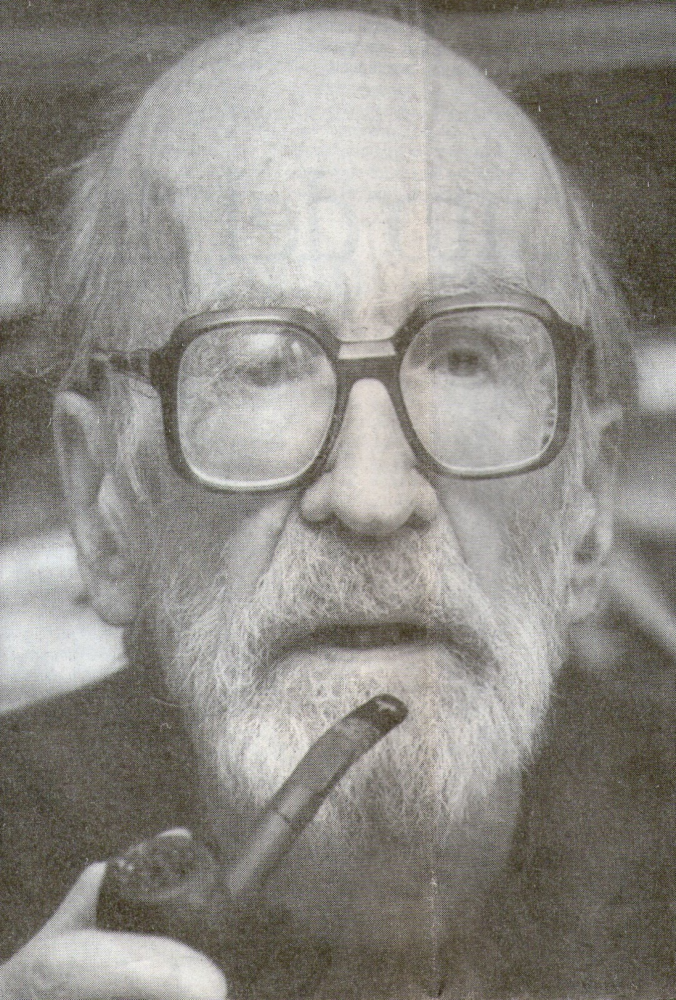
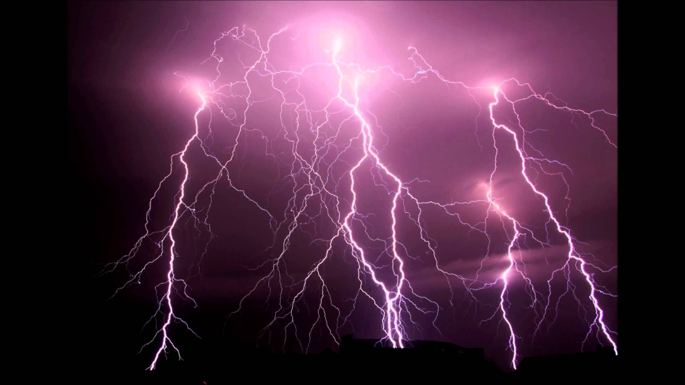

Mircea Eliade a fost o mare personalitate a omenirii. Este considerat părintele istoriei religiilor. El a avut contacte cu numeroase personalități ale acelei vremi : Mahatma Gandhi, Carl Gustav Jung, Georges Papini și alții. Mircea Eliade a fost o fire enciclopedică. Eliade avea cunoștiințe foarte vaste de geometrie sacră, simbolistică, antropologie, biologie, chimie, fizică, spiritualitate.

Dumnezeu
Pentru a înțelege mai bine opera lui Eliade este nevoie de a lămuri noțiunea de “Dumnezeu”. Este nevoie de o “definiție” a cuvântului “Dumnezeu”. Sau mai bine zis, lipsa definiției. “Dumnezeu” este caracterizat cel mai bine în lipsa definiției. Ceea ce numim “Dumnezeu” este Sursa. Sursa primordială de energie, acea energie vastă, imensă, plină de informație, viață, conștiință. Această energie are viață, personalitate, memorie, conștiință și Subiectivism. “Dumnezeu” este extrem de subiectiv. Această energie nu poate fi limitată la un cuvânt. Însăși termenul de “Dumnezeu” este prea mic. Termenul de “Dumnezeu” este o noțiune abstractă care este dată generic unei energii necunoscute. YHVH sau Yahve este o definiție prea mică pentru Sursă. Dumnezeu se caracterizează cel mai bine în absența definiției. Dumnezeu e mort, după cum zicea Nietsche. Termenul de Dumnezeu a murit pentru că nu poate eticheta o energie imens de mare și infinită.
Așadar Dumnezeu este Sursa. Sursa este un termen mai potrivit pentru ceea se numește “Dumnezeu”. Termenul de religie provine din latinescul “Relegare” care înseamnă reconectare la Sursă.
Dumnezeu nu este în nici un caz om.
Sacru și profanul
Despre sacru, Eliade concluzionează că aceasta este condiția omului. Condiția omului este sacralitatea. El vorbește de ceea ce se numește homo religiosus – adică omul în continuă reconectare cu Sursa. Condiția omului, spune el, este sentimentul de sacru, relația sa intimă cu divinitatea și raportarea sa la divinitate. După cum afirmam în articolele anterioare, în ultimă instanță nu contează decât relația cu divinitatea pentru că Sursa este în tot și în toate. Eliade afirma că exista un singur Spirit care se manifestă în diferite forme. Spiritul din Australia este același cu Spiritul din Occident, America, India, însă acesta se manifestă diferit în mai multe forme. Spiritul stă la baza tuturor aspectelor vieții joc, dans, învățat, muncit, sexualitate, prietenie, știință, comedie, artă, cunoaștere etc.
Arta este jocul Spiritului și experimentarea Spiritului în timp ce științele exacte sunt cunoașterea Spiritului. Două verbe diferite, a experimenta și a ști. Cu cât se experimentează mai mult cu atât se poate ști mai mult, prin urmare se poate experimenta mai mult. Zodiacul este irelevant pentru că se manifestă același Spirit în diferite situații, ipostaze, forme, trecut prin elemente diferite(foc,pământ,aer,apă). În esență este vorba de același Spirit.
Eliade vorbește despre desacralizarea lumii. Desacralizarea este o îndepărtare de Sursă, căderea în materialism și energiile telurice. De multe ori în cercurile spirituale și ezoterice această cădere în materialism, această laicizare și secularizare este blamată. Eu consider că această cădere în materialism a omenirii a fost necesară (așa a apărut fizica mecanicistă a lui Newton, filozofi ca Descartes, Spinosa) pentru a cunoaște mai bine energiile telurice, a lua contact cu ele și a ne reconecta mai puternic și mai strâns la Sursă. Căderea în energiile telurice, laicizarea, materialismul în genere a facut omul mult mai rațional. În occident acest proces și această etapă a fost un proces natural, de la sine. În Est în schimb, acest proces s-a produs brutal, pentru că existau niște energii mai brute, primitive, mai puțin elevate. Desacralizarea va duce la o reconectare mai strânsă la Sursă – ca în pilda fiului Risipitor, fiul risipitor este primit cu brațele deschise de Tată(Sursa); ca în pilda oii rătăcite, oaia rătăcita este iubită mai mult ca celelalte 99 de oi pentru că aceasta a experimentat.
Laicul și Profanul pot crea sacru și spiritualitate oricât de neconvențional și nonconformist ar suna. Laicul și Profanul creează spiritualitate din energiile telurice.
Eliade a anticipat reîntoarcerea la spiritualitate după moartea sa.
Eliade considera că monoteismul revoluționar din iudaism și creștinism a permis laicizarea, securalizarea și desacralizarea lumii pentru că celelalte divinități au fost eliminate. Eliade face distincția în ceea ce numim epifanii și teofanii. Epifanii – revelarea sacrului; Teofanii – revelarea divinității. Totul poate fi sacralizat, totul poate fi reintegrat în spiritualitate, toate energiile profane pot fi trăite ca o epifanie, o relevare a sacrului. Totul poate fi reintegrat in spiritualitate prin Trăirism, curentul lui Nae Ionescu, mentorul lui Eliade. Energiile telurice sunt cele mai dure, cele mai brutale și ele pot fi elevate. Nu spun că acesta este scopul, de a resacraliza tot. Această decizie depinde de fiecare individ. Se poate resacraliza orice prin resemnificare.
Dupa cum spunea Eliade, condiția umană este sentimentul de sacru, prin urmare este decizia fiecărui om cum se raportează la divinitate.
Istoria religiilor și Istoria omenirii

Următoarea teorie pe care o voi enunța în rândurile următoare nu a fost emisă de Mircea Eliade, dar este conexă cu lucrarea lui. Aceste informații provin din propriile mele studii și analize.
Civilizația atlantă s-a prăbușit în urma unui cataclism cu 11 milenii înainte de Hristos. 13 milenii înainte de momentul prezent. O jumătate din anul Mare definit de NASA. The Great Year, sau anul Mare se întinde pe perioada a 25,800 ani pământeni. Acest ciclu s-a încheiat. În prima jumătate a anului Mare omenirea a experimentat îndepărtarea de Sursă, iar în a doua jumătate apropierea de Sursă. Așa funcționează universul, în pulsuri, cicluri. Omenirea se apropie de Sursă din nou și va experimenta Lumina. Civilizația umană va trăi din nou în Lumina Sursei, așa cum a făcut-o acum 1 an în urmă (an mare).
Istoria omenirii nu începe la Sumer, nici cu 6000 de ani în urmă. Oamenii sunt ATLANȚI. De fapt sunt pre-Atlanți, dar pot fi identificați după ultima civilizație recent dispărută. Atlantida nu este ficțiune, este realitate. Platon rememora existența acelei civilizații. În biblioteca din Alexandria s-au aflat date despre atlanți.
În momentul prăbușirii civilizației Atlantida, au existat supraviețuitori care s-au răspândit peste tot pe planetă și au început să ducă mai departe cunoașterea din civilizația Atlantida. Ei sunt la bazele șamanismului, șintoismului, religiilor mayașe și aztece, zoroastrieni etc. Toate aceste religii inițiale nou născute răspândeau aceiași cunoaștere dar din cauza distanței, specificului locului, au căpătat trăsături și caracteristici diferite. Ele sunt doar în aparență diferite, însă după cum spunea Eliade, există un Singur Spirit care le guvernează pe toate : Sursa.
The Source! Yeah, That’s the Spirit!